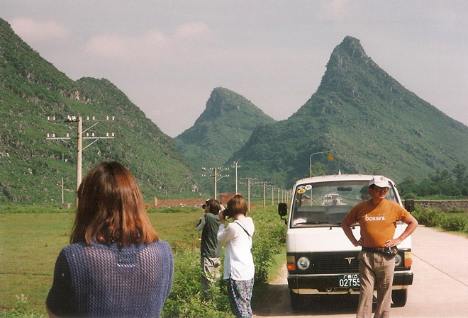
.
In order to get to our boat, we were taken in a mini-bus to the river, passing farmers with their water buffaloes which they use to plough rice terraces.
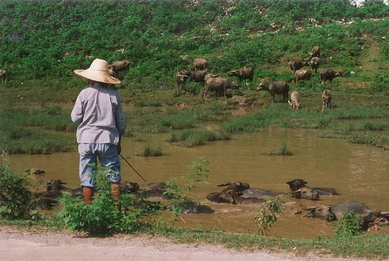
The buffaloes looked very content and cool in the muddy water.
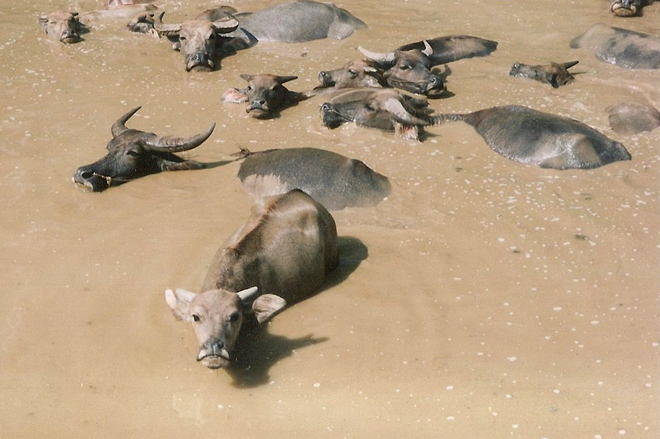
We then took a four hour trip down the Li River as it winds south from Guilin to Yangshuo. Along the banks we saw dramatic peaks, dense vegetation and the winding river itself creating, in the words of the tourist blurb, "magical vistas that loom large in the Chinese imagination, having inspired art and verse for centuries."
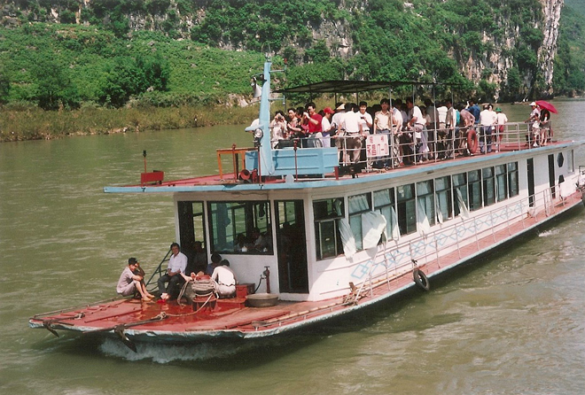
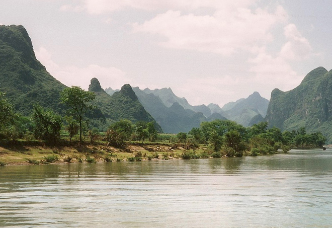
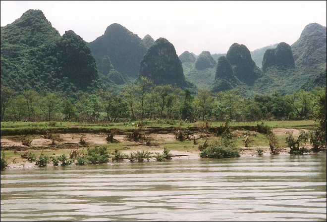
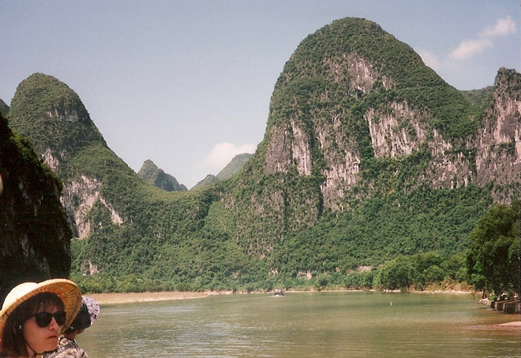
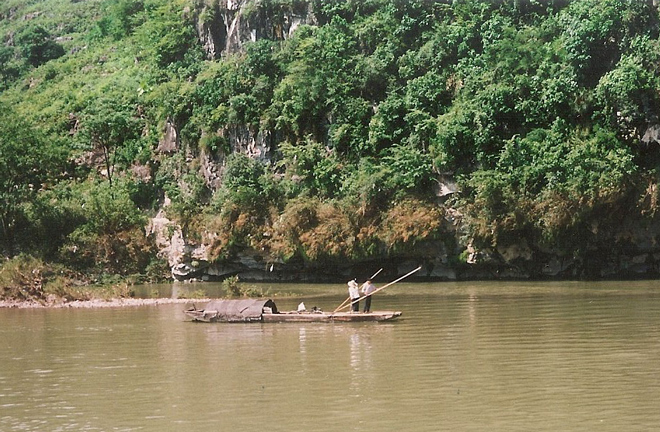
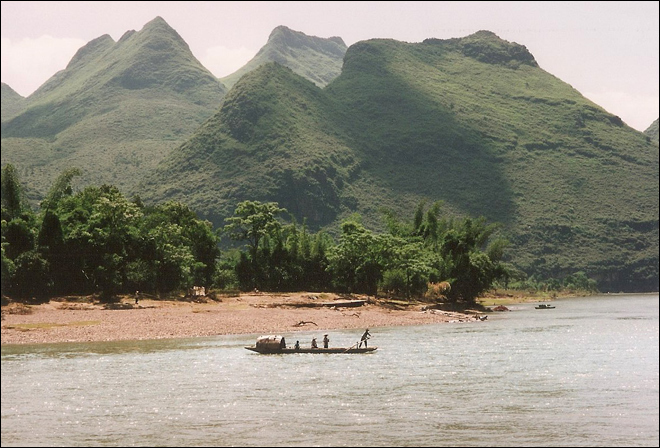
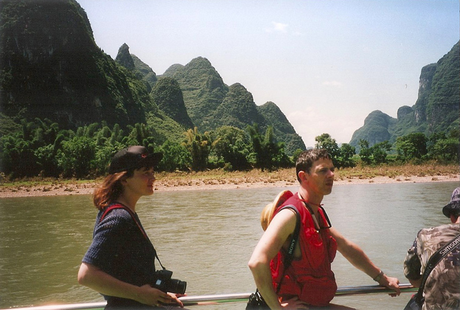
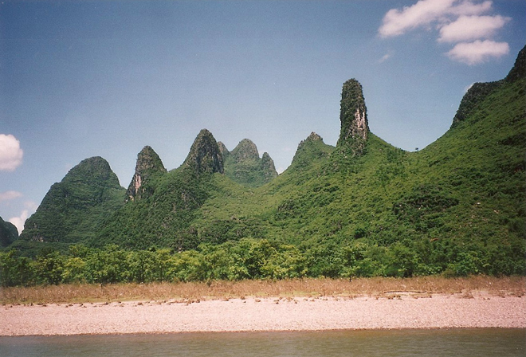
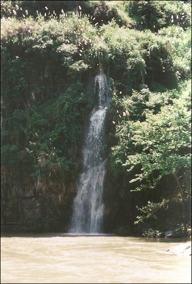
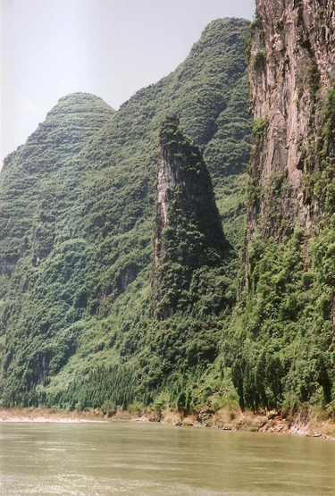
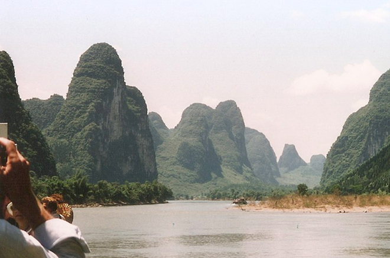
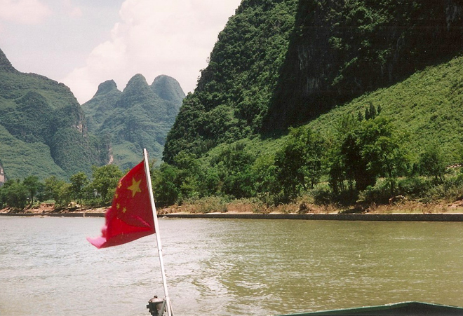
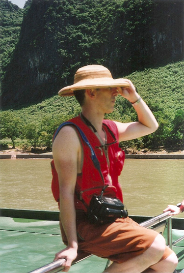
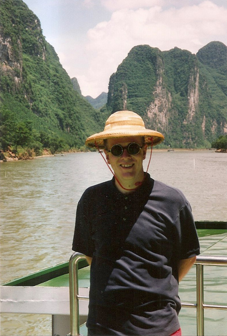
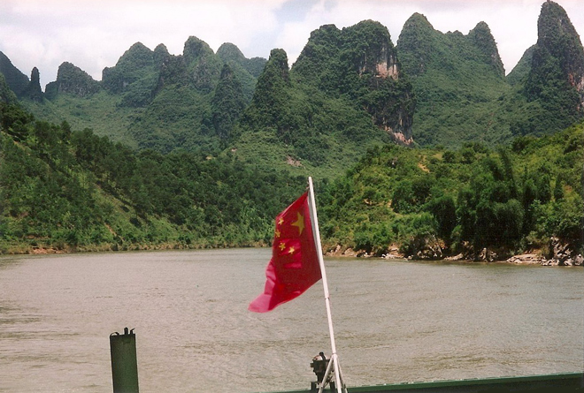
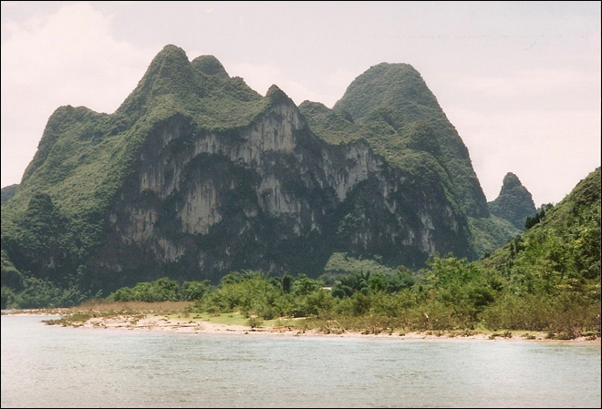
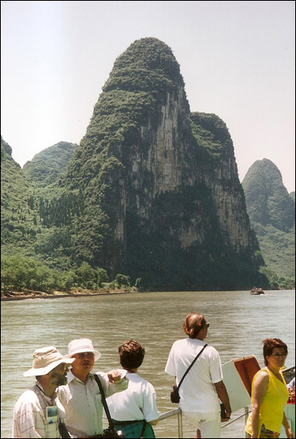
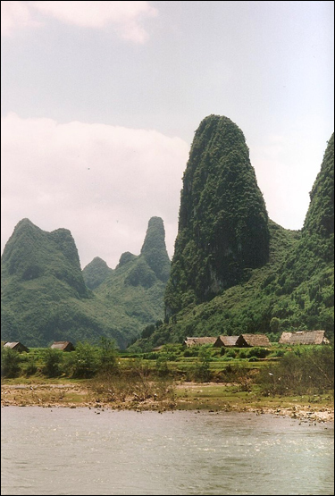
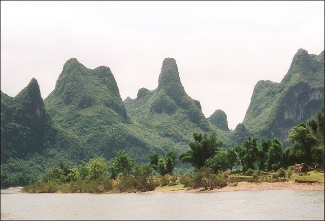
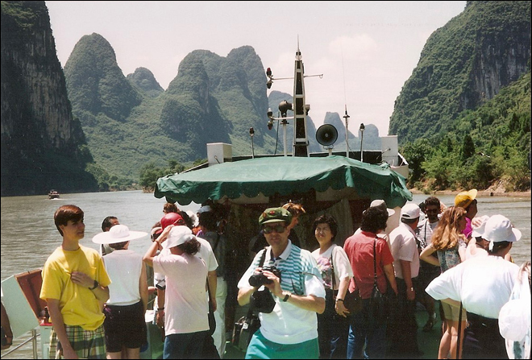
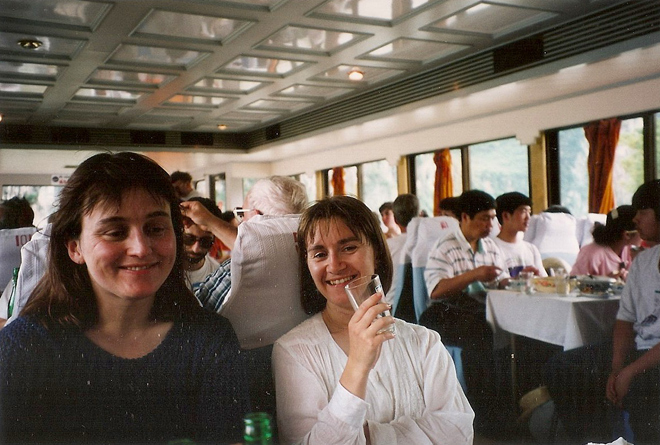
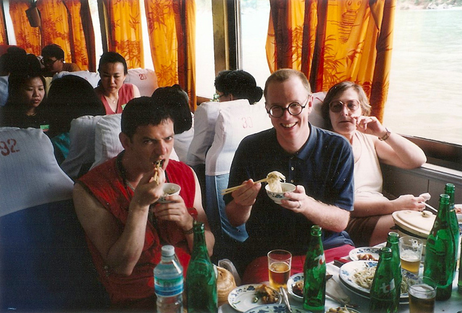
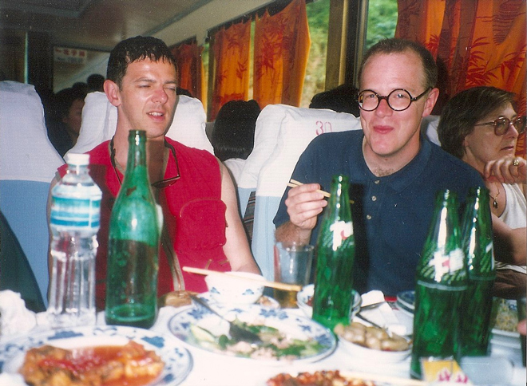
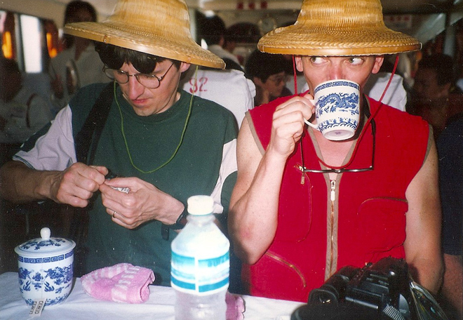